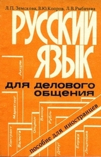
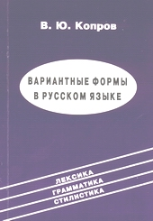
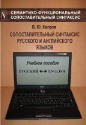

|  |
Копров В.Ю. Русский язык для делового общения. Пособие для иностранцев / Л.П. Земскова, В.Ю. Копров, Л.В. Рыбачева. - Воронеж: ВГУ, 1993. - 120 с. З 55 ББК 81.2Р-96 ISBN 5-7455-0697-0 Пособие составлено с учетом коммуникативных потребностей иностранцев, овладевших основами русского языка и предполагающих использовать свои речевые навыки для общения в деловой сфере. Достижение этой цели обеспечивается использованием методических приемов и упражнений, основу которых составляют ролевые задания. Для иностранных студентов, стажеров и бизнесменов, изучающих русский язык в вузах и на курсах. |
|  |
Копров В.Ю. Вариантные формы в русском языке. Учебное пособие для занятий с иностранными учащимися / В.Ю. Копров. - Воронеж: ВГУ, 2001. - 120 с. К 65 УДК 801.56 ББК 81.2 ISBN 5-9273-0144-4 В речи иностранных учащихся на русском языке встречаются неточности, обусловленные нечётким представлением об оттенках значения и сферах функционирования близких по смыслу форм и конструкций. Дифференциации таких конкурирующих единиц и их более корректному использованию в речи на продвинутом этапе обучения способствуют занятия по курсу "Вариантные формы в русском языке". В основу пособия по данному курсу положен функционально-семантический принцип описания и подачи языкового материала. Вариантные формы рассматриваются на трёх иерархически связанных уровнях: лексическом, грамматическом и стилистическом. Учитываются результаты сопоставления систем русского и родного языка обучаемых (английского, немецкого, французского, венгерского). Пособие также может быть использовано на занятиях по стилистике и культуре речи с русскоязычными студентами нефилологических специальностей. |
 |
Копров В.Ю. Вариантные формы в русском языке: Учебное пособие для иностранных учащихся продвинутого этапа обучения / В.Ю. Копров. – 2-е изд., испр. – М.: «Русский язык». Курсы, 2006. – 136 с. К 65 УДК 808.2(075.8)-054.6 ББК 81.2 Рус-923 ISBN 5-88337-098-5 В основу учебного пособия для иностранных учащихся продвинутого этапа обучения (II-III сертификационные уровни) положен семантико-функциональный принцип описания и подачи учебного материала. Отобранные с учётом сопоставительных исследований вариантные (конкурирующие) формы современного русского языка дифференцируются на трёх иерархически связанных уровнях: лексическом, грамматическом и стилистическом. Пособие также может быть использовано на занятиях по стилистике и культуре речи с русскоязычными студентами нефилологических специальностей. |
|  |
Копров В. Ю. Сопоставительный синтаксис русского и английского языков : Учебное пособие / Виктор Юрьевич Копров. – Воронеж: Издательство «НАУКА-ЮНИПРЕСС», 2010. – 226 с. ББК 81.2- 2 К658 ISBN 978-5-4292-0009-5 Синтаксис русского и английского языков сопоставляется в системно-структурном и семантико-функциональном планах. Используется методика многоаспектного описания устройства и функционирования предложения. Для студентов, магистрантов и аспирантов филологических факультетов, специалистов по межкультурной коммуникации, переводчиков, преподавателей русского и английского языков как иностранных. |